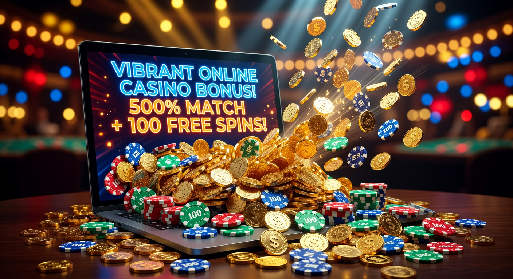
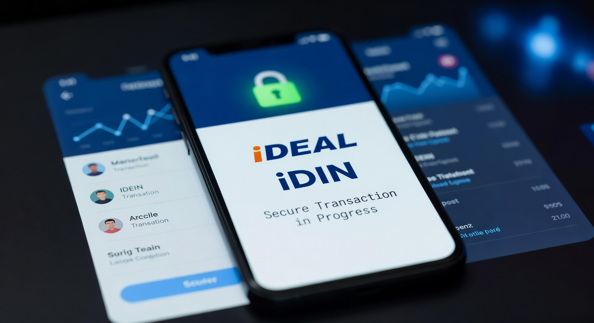
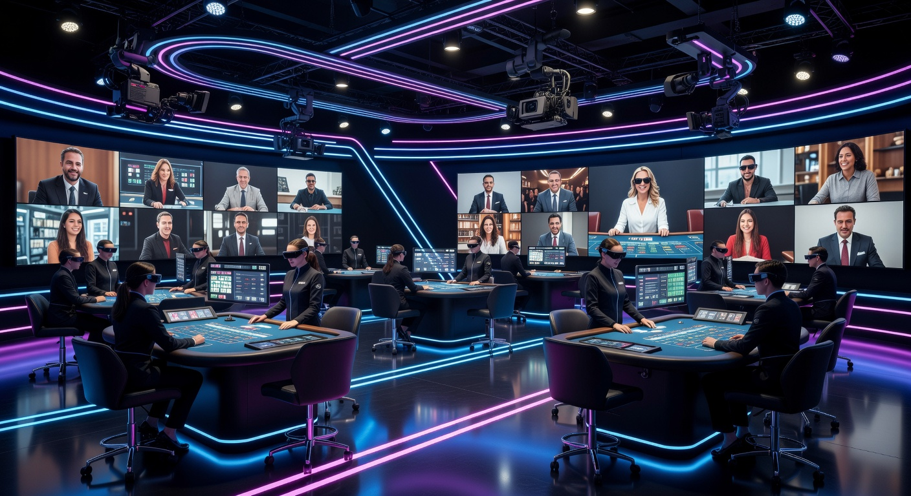

Nieuw Online Casinos in Nederland: Vind Jouw Volgende Speelplek
Het landschap van de digitale kansspelen is in 2026 dynamischer dan ooit tevoren. Voor de Nederlandse speler betekent dit een overvloed aan keuzes, waarbij elk nieuw online casinos platform probeert de harten van gokkers te veroveren met innovatieve functies en verbeterde gebruikerservaringen. In een markt die zich razendsnel ontwikkelt, is het essentieel om te weten waar je veilig kunt spelen en welke aanbieders de beste waarde bieden voor je tijd en geld.
De opkomst van nieuwe spelers op de markt zorgt voor gezonde concurrentie. Dit resulteert niet alleen in hogere bonussen, maar ook in technologische sprongen zoals snellere uitbetalingen en een breder spelaanbod. Of je nu op zoek bent naar de allernieuwste slots of een meeslepende ervaring in het live casino, de lanceringen van 2026 stellen zelden teleur. In dit artikel duiken we diep in de wereld van de nieuwste aanbieders en waar je op moet letten bij het maken van je keuze.
Waarom kiezen voor een recent gelanceerde goksite?
Veel spelers vragen zich af waarom ze de overstap zouden maken naar een platform dat pas net de deuren heeft geopend. Het antwoord ligt vaak in de moderne aanpak van deze bedrijven. Een nieuwste online casino maakt vaak gebruik van de meest recente software-architectuur, wat resulteert in een website die vlekkeloos werkt op zowel smartphones als desktops. De interface is vaak intuïtiever dan die van oudere, loggere websites die al tien jaar onveranderd zijn.
Daarnaast proberen nieuwkomers marktaandeel te winnen door zeer competitieve voorwaarden aan te bieden. Denk hierbij aan lagere rondspeelvoorwaarden voor bonussen of exclusieve spellen die nergens anders te vinden zijn. Het is ook de plek waar je vaak een online casino zonder registratie concept tegenkomt, waarbij je direct kunt storten en spelen zonder lange aanmeldformulieren te doorlopen. Deze efficiëntie is een grote trekpleister voor de moderne gokker in 2026.
Hier letten onze online casino experts op
Onze experts analyseren wekelijks tientallen platforms om te bepalen welke de moeite waard zijn. Het eerste aspect is altijd de technische integriteit. We kijken naar de laadsnelheden, de kwaliteit van de mobiele app en de stabiliteit van de servers tijdens piekuren. Een online casino in nederland moet tegenwoordig aan extreem hoge technische eisen voldoen om de veeleisende consument tevreden te stellen.
Bovendien onderzoeken we de achtergrond van de exploitant. Heeft het moederbedrijf een goede reputatie in andere landen? Hoe gaan ze om met klachten van spelers? Door deze diepgaande checks kunnen we garanderen dat de aanbevolen nieuw online casinos niet alleen leuk zijn om bij te spelen, maar ook een eerlijke kans op winst bieden. We kijken ook specifiek naar de transparantie van de algemene voorwaarden, zodat je nooit voor verrassingen komt te staan bij een uitbetaling.
Criteria voor het beoordelen van nieuw online casinos
Bij het selecteren van de beste nieuw online casinos hanteren we een strikt pakket aan criteria. Het gaat niet alleen om de visuele aantrekkingskracht, maar om het totaalpakket dat een speler ontvangt. We wegen elk onderdeel mee om tot een eindoordeel te komen dat objectief en bruikbaar is voor elke type speler, van recreatieve gokker tot high roller.
Veiligheid en een vergunning van de KSA
De absolute prioriteit is veiligheid. Voor spelers in Nederland is een licentie van de Kansspelautoriteit (KSA) de gouden standaard. Kansspelautoriteit houdt toezicht op de eerlijkheid van de spellen en de bescherming van spelersgegevens. Een legitiem casino is verplicht om aan te tonen dat hun Random Number Generators (RNG) regelmatig worden geaudit door onafhankelijke instanties. Zonder een geldige vergunning krijgt een aanbieder bij ons geen positieve beoordeling.
Kwaliteit van de klantenservice
In 2026 verwachten we dat een klantenservice 24/7 bereikbaar is via live chat. We testen de reactiesnelheid en de deskundigheid van de medewerkers. Word je in het Nederlands geholpen? Begrijpen ze complexe vragen over bonusvoorwaarden? Een nieuwe online casino partij die investeert in een lokaal ondersteuningsteam, laat zien dat ze de Nederlandse markt serieus nemen. Dit bouwt vertrouwen op en zorgt voor een prettige speelomgeving.
De beste bonussen bij nieuw online casinos

Bonussen zijn vaak het uithangbord van een nieuwe online aanbieder. Omdat ze nog geen gevestigde naam hebben, moeten ze creatief zijn om spelers te lokken. Dit resulteert in 2026 vaak in zeer lucratieve welkomstaanbiedingen die verder gaan dan de standaard 100% stortingsbonus. We zien vaker pakketten die over meerdere stortingen zijn verspreid, waardoor je langdurig extra speeltegoed ontvangt.
Het is echter cruciaal om naar de kleine lettertjes te kijken. Een bonus van €500 klinkt geweldig, maar als de rondspeelvoorwaarden 60x zijn, is de kans op een werkelijke uitbetaling klein. Bij de beste nieuw online casinos zien we een trend naar "fair play" bonussen met lagere wagering requirements, wat veel gunstiger is voor de speler.
Free spins en welkomstpakketten
Veel spelers geven de voorkeur aan free spins boven cash bonussen. De nieuwste aanbieders geven vaak gratis spins weg op populaire nieuwe slots van providers zoals NetEnt of Pragmatic Play. Dit is een uitstekende manier om het spelaanbod te verkennen zonder je eigen balans direct te belasten. Soms worden deze spins zelfs aangeboden als een "no deposit" bonus, puur voor het verifiëren van je account.
Loyaliteitsprogramma's voor vroege vogels
Een nieuwe online casino site wil zijn eerste groep spelers graag behouden. Daarom zien we vaak innovatieve loyaliteitsprogramma's waarbij je vanaf de eerste dag punten verzamelt. Deze punten kunnen in 2026 vaak direct worden ingewisseld voor cashback, merchandise of zelfs crypto-beloningen. Het loont dus om een van de eerste gebruikers te zijn bij een betrouwbare nieuwkomer.
iDEAL en iDIN: De standaard voor veilig gokken

In de Nederlandse markt is iDEAL onmisbaar. Vrijwel elke speler gebruikt deze methode voor dagelijkse transacties, en bij een casino in nederland is dit niet anders. Het biedt een veilige brug tussen je bank en de goksite. Naast betalingen zien we in 2026 ook een brede adoptie van iDIN. Dit systeem wordt gebruikt voor leeftijdsverificatie en identificatie, waardoor het registratieproces veel sneller verloopt.
Door iDIN te gebruiken, kan een aanbieder direct verifiëren dat je 18 jaar of ouder bent en wie je bent, zonder dat je handmatig paspoortkopieën hoeft te uploaden. Dit verhoogt de privacy en de snelheid. Voor wie liever andere methodes gebruikt, bieden veel sites ook de mogelijkheid voor een paypal casino zonder cruks ervaring, mits de aanbieder buiten het Nederlandse register opereert maar wel Europese standaarden hanteert.
Innovaties in het live casino aanbod

De sector voor live games heeft in 2026 een enorme vlucht genomen. Een modern live casino biedt nu ervaringen die bijna niet meer te onderscheiden zijn van een fysiek bezoek aan Las Vegas of Holland Casino. Denk aan Augmented Reality (AR) elementen die over de roulettetafel worden geprojecteerd, of game shows die aanvoelen als een grootschalige TV-productie. De interactie met de dealers is sneller en persoonlijker geworden door verbeterde streamingtechnologieën.
Nieuwe aanbieders focussen zich vaak op niche live games om zich te onderscheiden. Naast de bekende klassiekers zie je nu ook lokale varianten, zoals Nederlandstalige Blackjack tafels die exclusief beschikbaar zijn voor spelers van die specifieke site. Deze focus op lokalisatie maakt de ervaring voor de Nederlandse speler een stuk aangenamer en vertrouwder.
Gokvergunning controleren bij nieuwe aanbieders
Het is de verantwoordelijkheid van de speler om te controleren of een nieuwste online casino over de juiste papieren beschikt. Dit kun je eenvoudig doen door naar de onderkant van de website te scrollen. Hier moet het logo van de toezichthouder staan, inclusief een link naar de officiële licentiepagina. Naast de KSA zijn licenties uit Malta (MGA) en Curaçao ook veelvoorkomend bij internationale aanbieders.
Een geldige vergunning betekent dat er toezicht is op de financiële stromen. Dit garandeert dat het casino over voldoende reserves beschikt om winsten van spelers altijd uit te betalen. Het is een essentieel onderdeel van veilig gokken bij een online casino. Vertrouw nooit een site die vaag doet over haar licentiestatus of waar geen verifieerbare informatie te vinden is over de bedrijfsvoering.
Buitenlandse online casino bonussen vs lokale aanbieders
Spelers kijken vaak over de grens voor het beste online casino buitenland aanbod. Waarom? Omdat de bonussen in andere rechtsgebieden soms minder streng gereguleerd zijn dan in Nederland. Hierdoor kunnen aanbieders uit bijvoorbeeld Malta of Estland hogere bedragen aanbieden. Echter, je mist dan vaak de directe bescherming van de Nederlandse wetgeving.
Toch kiezen veel ervaren gokkers voor deze internationale sites vanwege het grotere spelaanbod en de afwezigheid van bepaalde limieten. Het is een afweging tussen maximale bescherming bij een lokale site en maximale vrijheid bij een buitenlandse aanbieder. In 2026 zijn de verschillen in kwaliteit echter kleiner geworden, aangezien internationale operators hun platforms steeds vaker optimaliseren voor de Europese markt als geheel.
Voordelen casino Zonder Cruks en internationaal spelen
Het Centraal Register Uitsluiting Kansspelen is een belangrijk middel voor spelersbescherming, maar sommige spelers zoeken bewust naar een Casino zonder Cruks. De redenen hiervoor variëren van privacyoverwegingen tot het willen vermijden van de soms rigide beperkingen die het systeem oplegt. Bij een internationaal nieuw online casinos platform dat niet is aangesloten bij dit register, gelden vaak andere regels voor stortingslimieten en speeltijd.
Hoewel dit meer vrijheid biedt, brengt het ook een grotere eigen verantwoordelijkheid met zich mee. Je moet zelf je grenzen bewaken. Deze platforms maken vaak gebruik van alternatieve betaalmethoden, zoals een paysafecard casino zonder cruks optie, wat een extra laag anonimiteit en controle over je budget biedt. Voor veel spelers is dit een aantrekkelijk alternatief voor de strikt gereguleerde Nederlandse markt.
Zo werkt een Cruks register inschrijving
Voor wie merkt dat het gokken geen spelletje meer is, is het CRUKS register een essentieel hulpmiddel. Een inschrijving zorgt ervoor dat je voor minimaal zes maanden wordt uitgesloten van alle legale Nederlandse goksites en fysieke casino's. Dit proces is in 2026 volledig gedigitaliseerd en gekoppeld aan je DigiD, waardoor een uitsluiting binnen enkele minuten geregeld is. Het is een krachtig signaal naar de markt dat spelerswelzijn voorop staat.
Wanneer je bent ingeschreven, wordt je BSN-nummer gecontroleerd bij elke inlogpoging op een Nederlandse site. Als er een match is, wordt de toegang geweigerd. Dit systeem is bedoeld om gokverslaving te voorkomen en kwetsbare groepen te beschermen. Het is belangrijk om te weten dat deze uitsluiting alleen geldt voor aanbieders met een Nederlandse licentie; internationale sites hebben geen toegang tot deze database.
Populaire betaalmethoden bij nieuw online casinos
De manier waarop we betalen bij nieuw online casinos is in 2026 sterk veranderd. Hoewel iDEAL koning blijft, zien we een enorme stijging in het gebruik van e-wallets en instant banking oplossingen. Deze methoden bieden vaak snellere opnames, wat voor veel spelers een doorslaggevende factor is bij het kiezen van een platform.
| Betaalmethode | Snelheid Storting | Snelheid Uitbetaling | Kenmerk |
|---|---|---|---|
| iDEAL | Direct | 1-2 Werkdagen | Meest vertrouwd in NL |
| Trustly | Direct | Binnen 15 min | Open Banking technologie |
| PayPal | Direct | Direct na goedkeuring | Hoge kopersbescherming |
| Paysafecard | Direct | N.v.t. (meestal) | Anoniem storten |
Naast de bovenstaande methoden zien we in 2026 ook steeds vaker de integratie van Apple Pay en Google Pay, wat storten met een vingerafdruk op je telefoon mogelijk maakt. De focus ligt volledig op frictieloze transacties waarbij de veiligheid gewaarborgd blijft door biometrische verificatie.
Verantwoord spelen bij nieuw online casinos
Bij het ontdekken van een nieuwste online casino, mag verantwoord spelen nooit uit het oog verloren worden. De beste platforms van 2026 bieden geavanceerde tools aan om je eigen speelgedrag te monitoren. Denk aan AI-gestuurde systemen die patronen van risicovol gedrag herkennen en je een seintje geven als je vaker of langer speelt dan gebruikelijk. Het instellen van limieten voor stortingen, verliezen en sessieduur is tegenwoordig standaard bij een online casino met een goede reputatie.
Verantwoord spelen betekent ook dat je alleen gokt met geld dat je kunt missen. Een nieuwe online site moet duidelijke informatie bieden over hulpinstanties en de mogelijkheid bieden voor een tijdelijke "time-out". In Nederland wordt hier streng op toegezien door de autoriteiten, en dit is een van de redenen waarom de markt hier als een van de veiligste ter wereld wordt beschouwd. Gamen moet immers een vorm van entertainment blijven, geen manier om financiële problemen op te lossen.
Veelgestelde vragen over nieuw online casinos
Zijn nieuw online casinos veilig om bij te spelen?
Ja, mits ze beschikken over een geldige licentie van een erkende autoriteit zoals de KSA of de MGA. Deze licenties garanderen dat van een casino de bedrijfsvoering voldoet aan strenge eisen op het gebied van eerlijkheid en veiligheid. Lees altijd eerst beoordelingen voordat je een storting doet.
Kan ik met iDEAL betalen bij de nieuwste aanbieders?
Bijna elk nieuw online casinos platform dat zich op de Nederlandse markt richt, biedt iDEAL aan. Het is de meest gebruikte methode en wordt door spelers gewaardeerd vanwege de snelheid en de koppeling met de eigen vertrouwde bankomgeving.
Wat is het voordeel van een casino zonder registratie?
Het grootste voordeel is snelheid. Je hoeft geen langdradig proces te doorlopen om een account aan te maken. Je stort geld via een methode als Trustly, en op de achtergrond worden je gegevens geverifieerd. Dit betekent dat je binnen een minuut kunt beginnen met spelen en dat uitbetalingen vaak direct op je rekening staan.
Bieden nieuwe casino’s betere bonussen aan?
Vaak wel. Omdat een nieuwe online casino aanbieder moet concurreren met gevestigde namen, bieden ze vaak hogere bonussen of gunstigere voorwaarden aan om nieuwe spelers aan te trekken. Dit kan variëren van extra veel free spins tot royale stortingsbonussen.

Expert in online casino's en digitaal gokken met meer dan 8 jaar ervaring in de sector.